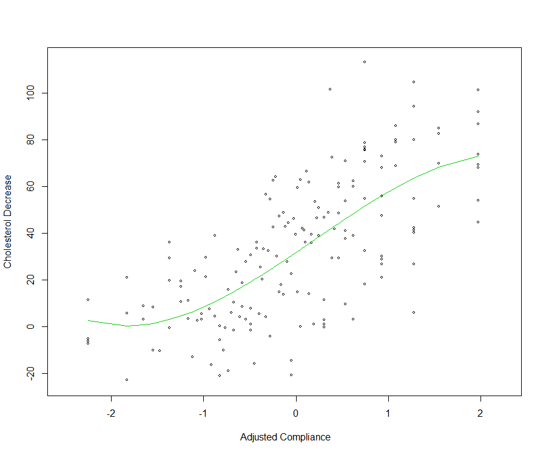
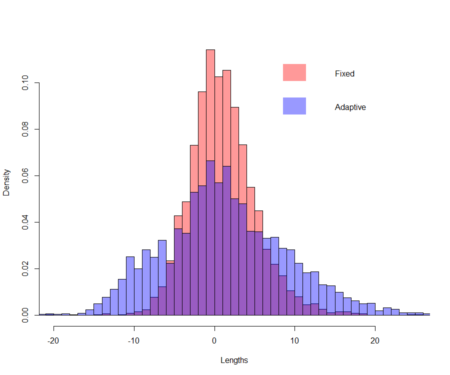
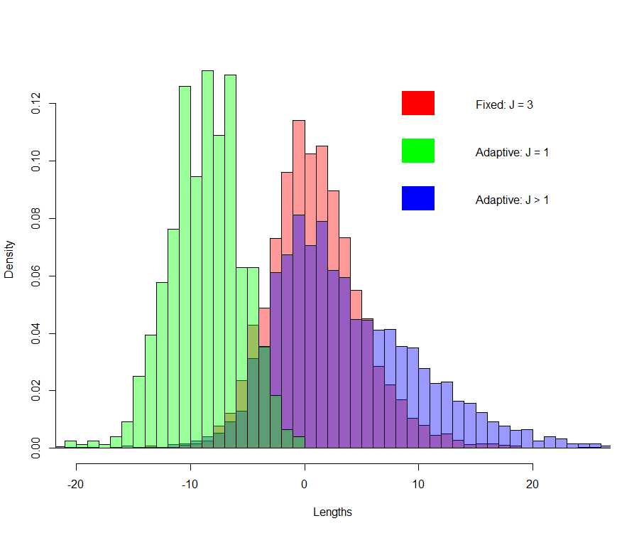

6 Post-Selection Inference
6.1 Introduction
When model selection is performed with the intention to use the selected model for inference (not only prediction), i.e. for a better understanding of the phenomenon under study, one needs inferential methods (e.g. building confidence intervals, testing) that take account the variability induced by data-based model selection methods. In other words, by ignoring the variability introduced by the model selection step, one introduces biases when computing for example confidence intervals for slope coefficients in the linear regression model. The bias always lowers the risk measure (variance) estimator, resulting in smaller confidence intervals and possibly also not centered around the true values. This can have important impacts when for example evaluating the strength of a drug (dosage) on an health-related outcome.
As an illustrative example, consider the data set cholesterol analysed in Efron and Hastie (2016) which concerns the response of 164 men to a treatment (over a period of 7 years) for lowering cholesterol levels in the body. The single predictor is a (standardized) fraction of intended dose (of the cholesterol lowering drug cholestyramine) actually taken (compliance). The response is the decrease in cholesterol level over the course of the experiment. A potential suitable model (or family of models) for the relationship between the decrease of the cholesterol level and the amount of cholestryramine (compliance) is a polynomial regression model \[\begin{equation} \boldsymbol{Y}=\sum_{j=0}^J\beta_jX^j+\boldsymbol{\varepsilon}=\beta_0+ \beta_1X+\beta_2X^2+\ldots +\beta_JX^J+\boldsymbol{\varepsilon} \end{equation}\]A model selection method is typically applied here to select \(J\). For the cholesterol data, using the \(C_p\) as model selection criterion (note that the sequence of ordered models is given), provides \(J=3\) as the best model.
Polynomial fit (\(J=3\)) for the cholesterol data 
With this example, one might be interested in building a confidence interval for the response to treatment, at a given treatment level \(X\). Letting \(\mu=\sum_{j=0}^J\beta_jX^j\), one actually seeks a confidence interval \(CI_{1-\alpha}\left(\mu\vert \hat{\boldsymbol{\beta}},\hat{J}\right)\) constructed from the sample via \(\hat{\boldsymbol{\beta}}\) and \(\hat{J}\). Ignoring the randomness of \(\hat{J}\) (i.e. by fixing \(J=\hat{J}\)) and performing standard inference using \(\hat{\mu}=\sum_{j=0}^J\hat{\beta}_j\mathbf{x}^j\) will provide misleading confidence intervals.
6.2 Inference via the nonparametric Bootstrap
One way to infer (computing confidence intervals) is by reproducing simultaneously the selection and estimation mechanism by means of the nonparametric bootstrap: \(B\) samples of size \(n\), \(\left(y_i^b,x_i^b\right), i=1,\ldots,n\), are created by drawing with replacement from the original sample. On each of the \(B\) samples, selection (using e.g. the \(C_p\)) is performed to obtain \(\hat{J}^b\), estimates \(\hat{\beta}_j^b\) used in computing \(\hat{\mu}^b=\sum_{j=0}^{\hat{J}^b}\hat{\beta}_j^b\mathbf{x}^j\). The Figure below provides the bootstrap distribution of \(\hat{\mu}^b\), for a compliance \(x=-2\), and for \(\widetilde{\mu}^b=\sum_{j=0}^{J}\hat{\beta}_j^b\mathbf{x}^j\) with \(J=3\), the value found in the original sample.
Bootstrap distribution of \(\tilde{\mu}^b\) (fixed) and \(\hat{\mu}^b\) (adaptive) on the cholesterol data 
As expected, the length of the confidence intervals are underestimated when one ignores the randomness introduced by the selection procedure (i.e. the randomness of \(\hat{J}\)). Actually, the confidence interval for \(\mu\) at \(x=-2\) (estimated via the nonparametric bootstrap) ignoring the randomness of the selection procedure is \(CI_{1-\alpha}\left(\mu\vert J=3\right)=1.05 \pm 8.09\) while not ignoring the randomness of the model selection procedure it is \(CI_{1-\alpha}\left(\mu\vert \hat{J}=3\right)=1.40 \pm 16.17\).
What actually happens with (hard thresholding) model selection criteria such as the \(C_p\) is that it is a discontinuous process, creating jumps in the estimates. In the cholesterol data example, with the nonparametric bootstrap, for about \(20\)% of the bootstrap samples, the \(C_p\) selected \(\hat{J}=1\), i.e. the linear model. In these cases, \(\hat{\mu}^b\vert \hat{J}=1\) are smaller. This is illustrated in the Figure below.
Bootstrap distribution of \(\tilde{\mu}^b\) (Fixed: \(J=3\)), \(\hat{\mu}^b\vert \hat{J}=1\) (Adaptive: \(J=1\)) and \(\hat{\mu}^b\vert \hat{J}>1\) (Adaptive: \(J>1\)) on the cholesterol data 
The distribution of the \(\hat{\mu}^b\) when \(\hat{J}=1\) is clearly different (different location) that the distribution of the \(\hat{\mu}^b\) when \(\hat{J}>1\). \(\hat{J}=1\) happens in about 20% of the bootstrap samples, which creates, from one sample to the other, important jumps.
6.3 Improving on the Bootstrap: Smoothed Bootstrap or Bagging
Bagging stands for bootstrap averaging and leads to “improvements for unstable procedures” (Breiman 1996), which include subset selection in linear regression (Breiman 1994). Bagging is also known as bootstrap smoothing (Efron and Tibshirani 1996). Given bootstrap replicates of a bootstrapped statistic \(T^b, b=1,\ldots,B\), the bootstrap standard errors are computed using the bootstrap distribution as \[\begin{equation} \widehat{\mbox{sd}}_B=\sqrt{\frac{1}{B-1}\sum_{b=1}^B\left(T^b-\overline{T}_B\right)^2} \end{equation}\] with \[\begin{equation} \overline{T}_B = \frac{1}{B}\sum_{b=1}^BT^b \end{equation}\]Since after a bootstrap sampling, \(\overline{T}_B\) is available, the bagging method proposes to compute the standard errors associated to \(\overline{T}_B\), which are lower. A brute force method would bootstrap several values for \(\overline{T}_B\) which ends up in large computational times and is prohibitive in high dimensions. Actually, there is no need to resample further.
Let \(N_{bi}\) denote the number of times observation \(i\) occurs in the bootstrap sample \(b\). The vector \(\mathbf{N}_b=\left(N_{1b},\ldots,N_{nb}\right)\) has a multinomial distribution with \(n\) draws on \(n\) categories each with associated probability \(1/n\), and has mean vector and covariance matrix \[\begin{equation} \mathbf{N}_b \sim \mbox{Mult}\left(\boldsymbol{1}_n, \mathbf{I}_n-\frac{1}{n}\boldsymbol{1}_n\boldsymbol{1}_n\right) \end{equation}\] with \(\boldsymbol{1}_n\) the \(n\times 1\) vector ones. Using this setting, Efron (2014) shows that the infinitesimal jackknife estimate of the standard deviation for \(\overline{T}_B\) is \[\begin{equation} \sqrt{\sum_{i=1}^n\mbox{cov}^2\left(N_{bi},T^b\right)} \end{equation}\] A suitable estimator is given by \[\begin{equation} \widetilde{\mbox{sd}}_B=\sqrt{\sum_{i=1}^n\widehat{\mbox{cov}}^2\left(N_{bi},T^b\right)} \end{equation}\] with \[\begin{equation} \widehat{\mbox{cov}}^2\left(N_{bi},T^b\right)=\frac{1}{B}\sum_{b=1}^B\left(N_{bi}-N_{\cdot i}\right)\left(T^b-\overline{T}_B\right) \end{equation}\] and \(N_{\cdot i}=(1/B)\sum_{b=1}^BN_{bi}\). Moreover, it is always true that \[\begin{equation} \frac{\widetilde{\mbox{sd}}_B}{\widehat{\mbox{sd}}_B}\leq 1 \end{equation}\]Bagging with the infinitesimal jackknife allows to be more precise than with the bootstrap without the need to simulate (bootstrap) more replicates, which makes it a computationally convenient inferential method. For the cholesterol data example, the standard deviations (across values for \(x\)) decrease of about 12%. In general, the savings due to bagging increase with the nonlinearity of \(T^b\) and is therefore a suitable approach for inference after selection. Wager, Hastie, and Efron (2014) have used this approach to derive confidence intervals for Random Forests. Bagging is actually a form of model averaging.
6.4 Post selection significance testing
Very recently, test statistics and their associated distribution have been proposed in the linear regression case, to test hypothesis about (linear combinations of) slope parameters, that take into account the randomness of the selection part of the analysis. It is actually possible to formalize the conditional distribution of (a linear combination of) the slope estimators (typically the LS), conditionally on the distribution of the outcome of the selection method. For the later, an important result is provided by the polyhedral lemma which allows to formalize the model selection selection operation in a more tractable way. References include Lee et al. (2016), Tibshirani et al. (2016), Hastie, Tibshirani, and Wainwright (2016), Section 6.3, and Tian and Taylor (2018).
References
Efron, B., and T. Hastie. 2016. Computer Age Statistical Inference: Algorithms, Evidence, and Data Science. Cambridge University Press.
Breiman, L. 1996. “Bagging Predictors.” Machine Learning 24: 123–40.
Breiman, L. 1994. “Bagging Predictors.” Technical Report 421. Department of Statistics, University of California, Berkeley.
Efron, B., and R. Tibshirani. 1996. “Using Specially Designed Exponential Families for Density Estimation.” Annals of Statististics 24: 2431–61.
Efron, B. 2014. “Estimation and Accuracy After Model Selection.” Journal of the American Statistical Association 109: 991–1007.
Wager, S., T. Hastie, and B. Efron. 2014. “Confidence Intervals for Random Forests: The Jackknife and the Infinitesimal Jackknife.” Journal of Machine Learning Research 15: 1625–51.
Lee, J. D., D. L. Sun, Y. Sun, and J. E. Taylor. 2016. “Exact Post-Selection Inference, with Application to the Lasso.” The Annals of Statistics 44: 907–27.
Tibshirani, R. J., J. E. Taylor, R. Lockhart, and R. Tibshirani. 2016. “Exact Post-Selection Inference for Sequential Regression Procedures.” Journal of the American Statistical Association 111: 600–620.
Hastie, T., R. Tibshirani, and M. Wainwright. 2016. Statistical Learning with Sparsity: The Lasso and Generalizations. Monographs on Statistics & Applied Probability 143. Chapman & Hall.
Tian, X., and J. E. Taylor. 2018. “Selective Inference with a Randomized Response.” Annals of Statististics 46: 679–710.